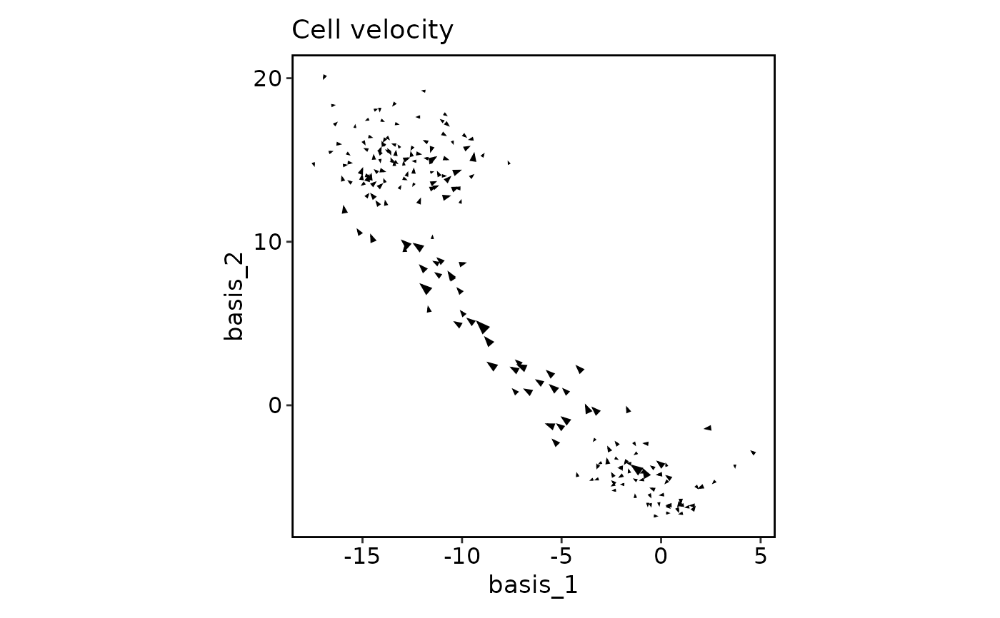
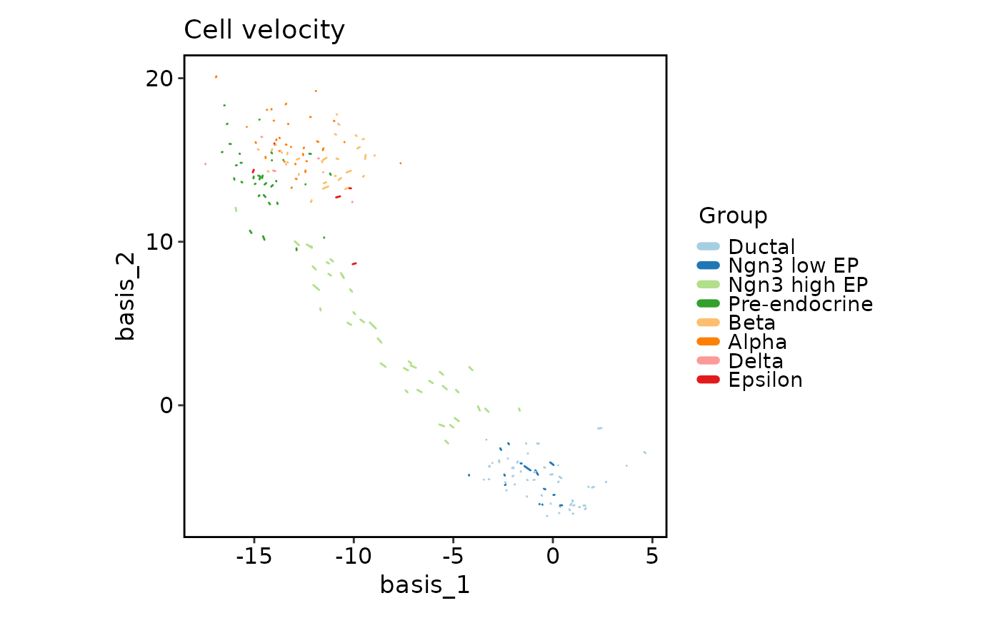
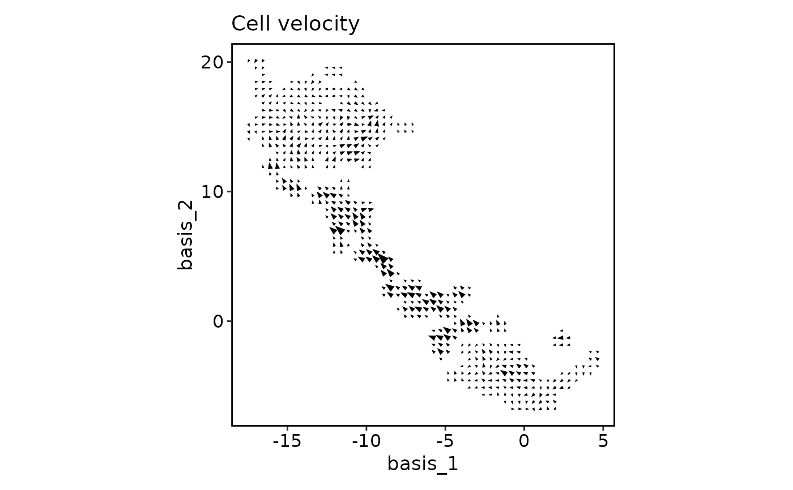
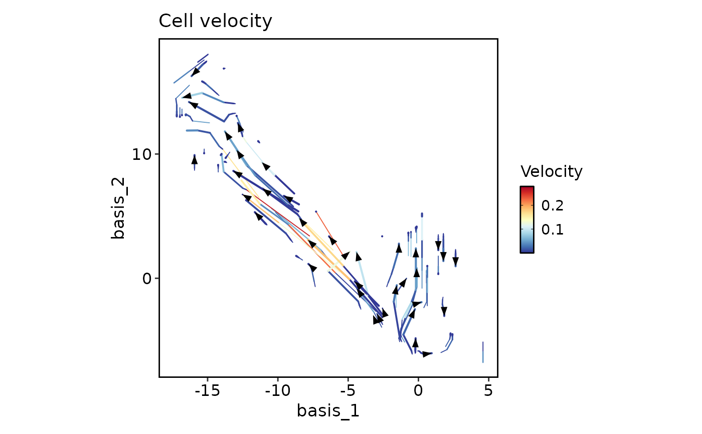

The plot shows the velocity vectors of the cells in a specified reduction space.
Usage
VelocityPlot(
embedding,
v_embedding,
plot_type = c("raw", "grid", "stream"),
split_by = NULL,
group_by = NULL,
group_name = "Group",
group_palette = "Paired",
group_palcolor = NULL,
n_neighbors = NULL,
density = 1,
smooth = 0.5,
scale = 1,
min_mass = 1,
cutoff_perc = 5,
arrow_angle = 20,
arrow_color = "black",
arrow_alpha = 1,
streamline_l = 5,
streamline_minl = 1,
streamline_res = 1,
streamline_n = 15,
streamline_width = c(0, 0.8),
streamline_alpha = 1,
streamline_color = NULL,
streamline_palette = "RdYlBu",
streamline_palcolor = NULL,
streamline_bg_color = "white",
streamline_bg_stroke = 0.5,
aspect.ratio = 1,
title = "Cell velocity",
subtitle = NULL,
xlab = NULL,
ylab = NULL,
legend.position = "right",
legend.direction = "vertical",
theme = "theme_this",
theme_args = list(),
return_layer = FALSE,
seed = 8525
)Arguments
- embedding
A matrix or data.frame of dimension n_obs x n_dim specifying the embedding coordinates of the cells.
- v_embedding
A matrix or data.frame of dimension n_obs x n_dim specifying the velocity vectors of the cells.
- plot_type
A character string specifying the type of plot to create. Options are "raw", "grid", or "stream". Default is "raw".
- split_by
An optional character string specifying a variable to split the plot by. Not supported yet.
- group_by
An optional character string specifying a variable to group the cells by.
- group_name
An optional character string specifying the name of the grouping variable in legend. Default is "Group".
- group_palette
A character string specifying the color palette to use for grouping. Default is "Paired".
- group_palcolor
An optional character vector specifying the colors to use for grouping. If NULL, the colors will be generated from the group_palette.
- n_neighbors
An optional numeric value specifying the number of nearest neighbors for each grid point. Default is ceiling(ncol(embedding) / 50).
- density
An optional numeric value specifying the density of the grid points along each dimension. Default is 1.
- smooth
An optional numeric value specifying the smoothing factor for the velocity vectors. Default is 0.5.
- scale
An optional numeric value specifying the scaling factor for the velocity vectors. Default is 1.
- min_mass
An optional numeric value specifying the minimum mass required for a grid point to be considered. Default is 1.
- cutoff_perc
An optional numeric value specifying the percentile cutoff for removing low-density grid points. Default is 5.
- arrow_angle
An optional numeric value specifying the angle of the arrowheads in degrees for velocity arrows. Default is 20.
- arrow_color
A character string specifying the color of the velocity arrowheads. Default is "black".
- arrow_alpha
A numeric value specifying the transparency of the velocity arrows. Default is 1 (fully opaque). Only works for
plot_type = "raw"andplot_type = "grid". Forplot_type = "stream", usestreamline_alphainstead.- streamline_l
An optional numeric value specifying the length of the velocity streamlines. Default is 5.
- streamline_minl
An optional numeric value specifying the minimum length of the velocity streamlines. Default is 1.
- streamline_res
An optional numeric value specifying the resolution of the velocity streamlines. Default is 1.
- streamline_n
An optional numeric value specifying the number of velocity streamlines to draw. Default is 15.
- streamline_width
A numeric vector of length 2 specifying the width of the velocity streamlines. Default is c(0, 0.8).
- streamline_alpha
A numeric value specifying the transparency of the velocity streamlines. Default is 1 (fully opaque).
- streamline_color
A character string specifying the color of the velocity streamlines.
- streamline_palette
A character string specifying the color palette to use for the velocity streamlines. Default is "RdYlBu".
- streamline_palcolor
An optional character vector specifying the colors to use for the velocity streamlines. If NULL, the colors will be generated from the streamline_palette.
- streamline_bg_color
A character string specifying the background color of the velocity streamlines. Default is "white".
- streamline_bg_stroke
A numeric value specifying the background stroke width of the velocity streamlines. Default is 0.5.
- aspect.ratio
A numeric value specifying the aspect ratio of the plot.
- title
A character string specifying the title of the plot. A function can be used to generate the title based on the default title. This is useful when split_by is used and the title needs to be dynamic.
- subtitle
A character string specifying the subtitle of the plot.
- xlab
A character string specifying the x-axis label.
- ylab
A character string specifying the y-axis label.
- legend.position
A character string specifying the position of the legend. if
waiver(), for single groups, the legend will be "none", otherwise "right".- legend.direction
A character string specifying the direction of the legend.
- theme
A character string or a theme class (i.e. ggplot2::theme_classic) specifying the theme to use. Default is "theme_this".
- theme_args
A list of arguments to pass to the theme function.
- return_layer
A logical value indicating whether to return the ggplot layer instead of the full plot. Default is FALSE.
- seed
The random seed to use. Default is 8525.
Value
A ggplot object representing the cell velocity plot or a ggplot layer if return_layer is TRUE.
Examples
# \donttest{
data(dim_example)
VelocityPlot(dim_example[, 1:2], dim_example[, 3:4])

VelocityPlot(dim_example[, 1:2], dim_example[, 3:4], group_by = dim_example$clusters)

VelocityPlot(dim_example[, 1:2], dim_example[, 3:4], plot_type = "grid")

VelocityPlot(dim_example[, 1:2], dim_example[, 3:4], plot_type = "stream")

# }